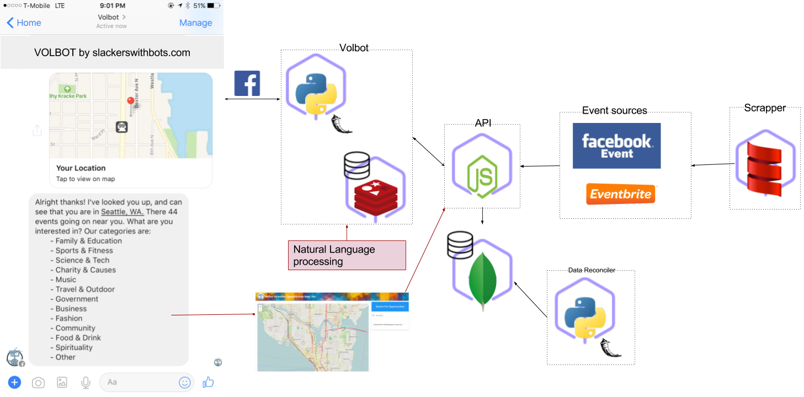

voltbot
slackerswithbots
presented by…

Kenneth Massada, API

Isiah Torain, Code Slayer

JP Mugizi, Data

Nick Hunt Walker, Code Chopper

Kodjo Gambrah, Data Scrapper
Volbot
Build an interface that allow consumers to find volunteering opportunities next to them.

Building Blocks
- Distributed
- NoSql Datastore
- Microservices driven
Components
Data Scrapper

Data Mocking

Data Source

API

Chatbot

Resources
github.com/slackerswithbots

Heroku.com/orgs/slackerswithbots

Domain: slackerswithbots.com

Architecture
